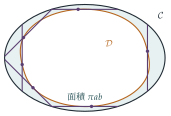

STEP III 2011，第 5 題
繼續之前，請先閱讀題目（原題為英文）。題目載於 STEP Support Programme 的題目資料庫： step.maths.org/questions/11-s3-q5
引子
隨便取一個卵形，甚麼形狀都可以，只要它是凸（convex）的，然後讓一根長度固定的桿在裏面滑動一圈，兩端始終留在曲線上。在桿上塗一個點，把桿分成長度為 \(a\) 和 \(b\) 的兩段。桿繞行一周時，這個點會描出一個較小的卵形。兩條曲線之間的環形區域，面積是多少？
答案令人驚訝：無論原來的曲線是甚麼形狀，面積都是 \(\pi ab\)。又長又窄的卵形、蛋形、圓角三角形：環形的面積永遠相同，只取決於那個點在桿上的位置。這個結果由劍橋大學岡維爾與凱斯學院（Gonville and Caius College, Cambridge）的院士 Hamnet Holditch 牧師於 1858 年發現，是初等幾何中最出人意表的定理之一。本題只用一條面積公式就把它證明出來。
動筆之前
先在最簡單的情況下檢驗這個定理。若 \(\mathcal{C}\) 是半徑為 \(R\) 的圓，\(P\) 描出的是甚麼曲線？環形的面積是多少？
由對稱性可知，\(P\) 描出一個同心的圓，設其半徑為 \(r\)。桿 \(AB\) 是大圓上一條通過 \(P\) 的弦，而相交弦定理（intersecting chords theorem，又稱「圓冪」（power of a point））指出，對任何通過 \(P\) 的弦，都有 \(PA \times PB = R^2 - r^2\)。所以 \(ab = R^2 - r^2\)，環形的面積是 \(\pi R^2 - \pi r^2 = \pi ab\)。定理說的是：這個結論對每一條凸曲線都成立，不限於圓。
逐步解題
階段 1 由坐標求面積
設 \(x = r\cos\theta\) 和 \(y = r\sin\theta\)，全部都是 \(t\) 的函數，計算 \(x\dot y - y\dot x\)，其中上方的點表示 \(\frac{\mathrm{d}}{\mathrm{d}t}\)。
\(\dot x = \dot r\cos\theta - r\sin\theta\,\dot\theta\)，而 \(\dot y = \dot r\sin\theta + r\cos\theta\,\dot\theta\)。於是 \[x\dot y - y\dot x = r\cos\theta\,(\dot r\sin\theta + r\cos\theta\,\dot\theta) - r\sin\theta\,(\dot r\cos\theta - r\sin\theta\,\dot\theta) = r^2\dot\theta.\] 所以 \(\frac12\int r^2\,\mathrm{d}\theta = \frac12\int r^2\dot\theta\,\mathrm{d}t = \frac12\int (x\dot y - y\dot x)\,\mathrm{d}t\)。■
這條公式不需要極坐標（polar coordinates），只需要把笛卡兒坐標（cartesian coordinates）下的位置寫成某個參數（parameter）的函數。當一點沿着一條包圍 \(O\) 的閉曲線逆時針繞行一周時，公式給出的就是曲線內的面積。
階段 2 桿的兩端
桿由 \(A\) 指向 \(B\) 的方向是 \((\cos t, \sin t)\)，而 \(P\) 與 \(A\) 的距離是 \(a\)，與 \(B\) 的距離是 \(b\)。所以 \[A = (x - a\cos t,\; y - a\sin t), \qquad B = (x + b\cos t,\; y + b\sin t).\]
階段 3 \(OA\) 掃過的面積
把 \((*)\) 應用於 \(A\)。展開 \(x_A\dot y_A - y_A\dot x_A\)，並按 \(a\) 的冪次把各項整理好。
由 \(x_A = x - a\cos t\)、\(y_A = y - a\sin t\)，可得 \(\dot x_A = \dot x + a\sin t\) 和 \(\dot y_A = \dot y - a\cos t\)。展開得 \[\begin{aligned} x_A\dot y_A - y_A\dot x_A &= (x - a\cos t)(\dot y - a\cos t) - (y - a\sin t)(\dot x + a\sin t) \\ &= (x\dot y - y\dot x) + a^2(\cos^2 t + \sin^2 t) - a\bigl[(x + \dot y)\cos t + (y - \dot x)\sin t\bigr]. \end{aligned}\] 由 \(0\) 積分至 \(2\pi\) 再除以二：第一項給出 \([P]\)，第二項給出 \(\frac12 a^2 \cdot 2\pi = \pi a^2\)，第三項給出 \(-af\)。所以 \[[A] = [P] + \pi a^2 - af. \qed\]
現在求 \([B]\)。（提示：把 \(A\) 的公式中的 \(a\) 換成甚麼，就得到 \(B\)？）
\(B = (x + b\cos t, y + b\sin t)\) 就是把 \(A\) 的公式中的 \(a\) 換成 \(-b\)。所以 \[[B] = [P] + \pi b^2 + bf.\]
階段 4 消去 \(f\)
\(A\) 和 \(B\) 都沿同一條曲線 \(\mathcal{C}\) 繞行一周。由此可知 \([A]\) 和 \([B]\) 有甚麼關係？
當 \(t\) 由 \(0\) 變到 \(2\pi\) 時，\(A\) 和 \(B\) 各自沿 \(\mathcal{C}\) 逆時針繞行一周，所以 \([A] = [B] = \text{面積}(\mathcal{C})\)。令兩個表達式相等， \[\pi a^2 - af = \pi b^2 + bf \quad\Longrightarrow\quad f(a + b) = \pi(a^2 - b^2) \quad\Longrightarrow\quad f = \pi(a - b).\] 由於 \(P\) 沿 \(\mathcal{D}\) 繞行一周，\([P] = \text{面積}(\mathcal{D})\)，於是 \[\text{面積}(\mathcal{C}) - \text{面積}(\mathcal{D}) = [A] - [P] = \pi a^2 - a\pi(a - b) = \pi ab. \qed\] 那個取決於曲線形狀的神祕量 \(f\)，自始至終沒有計算過：它被消去了。
回顧
切合問題的公式。面積公式 \((*)\) 只需要把坐標寫成參數的函數，而桿的運動正是這樣描述的。
兩個表達式，一個未知量。我們無法計算 \(f\)，但手上有兩條含有它的方程，於是把它消去，就像解聯立方程（simultaneous equations）一樣。
先檢驗特殊情況。動筆之前，圓的情況已經給出答案 \(\pi ab\)，讓我們知道目標是甚麼。
背後的數學
公式 \((*)\) 是格林定理（Green’s theorem）的特殊情況；格林定理把沿閉曲線的積分與曲線內區域上的積分聯繫起來。它的面積形式指出，曲線所包圍的面積是 \(\frac12\oint(x\,\mathrm{d}y - y\,\mathrm{d}x)\)，這個積分只需沿邊界走一圈就能算出。工程師利用這一點造出了求積儀（planimeter），這是十九世紀發明的一種機械儀器（其中以 Jakob Amsler 在 1854 年的設計最為成功）：用指針沿着地圖或圖表上某個圖形的邊界描一圈，一個小輪就會記錄所包圍的面積。求積儀曾用來量度土地面積、根據示功圖（indicator diagram）計算蒸汽機所作的功，還有許多其他用途，直至被數碼方法取代為止。Holditch 定理與此密切相關：那根桿就像求積儀的臂。

細節條款
Holditch 陳述這個定理時，對條件不大講究，但定理其實需要一些條件。桿必須能夠在兩端都留在曲線上的情況下繞足一整圈，而描出的曲線 \(\mathcal{D}\) 必須是只描一次的簡單閉曲線（simple closed curve）；如果桿相對於 \(\mathcal{C}\) 的闊度太長，\(\mathcal{D}\) 可能會自相交，這時公式給出的「面積」會把某些區域計算兩次，或以負號計算。題目假設 \(\mathcal{D}\) 是一條包含 \(O\) 的凸曲線，從而避開了這些困難。找出定理究竟在甚麼條件下成立，正好說明一個優美的想法必須經過嚴格化才站得住腳，這也是第 3 章的主題。
思維技巧
如果某個量太複雜而無法計算，就找兩條含有它的不同方程，把它消去。
這裏 \(f\) 取決於曲線的每一個細節，但它同時出現在 \([A]\) 和 \([B]\) 的表達式中，而 \([A] = [B]\) 這個事實把它消除了。答案 \(\pi ab\) 之所以能夠與曲線無關，全因取決於曲線的部分互相抵消了。
延伸練習
橢圓的面積。利用 \((*)\)，取 \(x = p\cos t\)、\(y = q\sin t\)，證明半軸為 \(p\) 和 \(q\) 的橢圓面積為 \(\pi pq\)。
圓的情況。證明相交弦定理：若圓的兩條弦相交於 \(P\)，則每條弦被分成的兩段，其長度之積相等。由此推導出圓的 Holditch 定理。
中點。證明由 \(f = \pi(a - b)\) 可知，當 \(P\) 是桿的中點時，\(f = 0\)。這時環形的面積是多少？答案以桿長 \(L\) 表示。
三角形。 較難 利用 \((*)\)，沿邊界繞行一周，求頂點為 \((0, 0)\)、\((x_1, y_1)\)、\((x_2, y_2)\) 的三角形的面積，並證明它等於 \(\frac12|x_1y_2 - x_2y_1|\)。這就是求任意多邊形面積的「鞋帶公式」（shoelace formula）的起點。
延伸閱讀
Mark Levi, The Mathematical Mechanic（Princeton University Press）。以桿、輪和彈簧等物理推理來證明數學結果，與本節的精神一脈相承。
H. M. Schey, Div, Grad, Curl, and All That（Norton）。向量微積分（vector calculus）的非正式入門，內容包括格林定理。
Hamnet Holditch, “Geometrical theorem”，Quarterly Journal of Pure and Applied Mathematics 2 (1858)。原始的短文，只有短短一段，完全沒有提及任何細節條款。